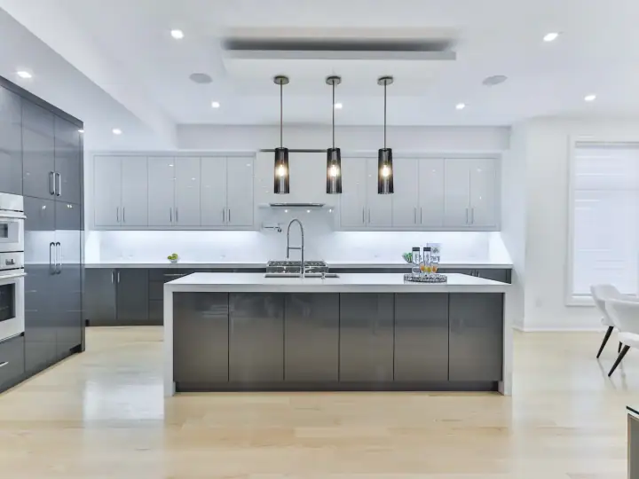
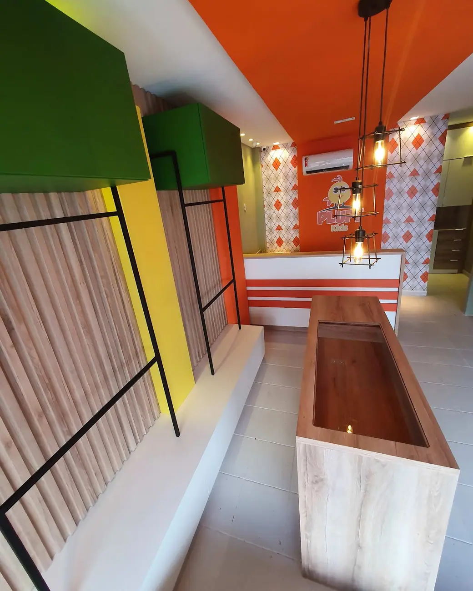
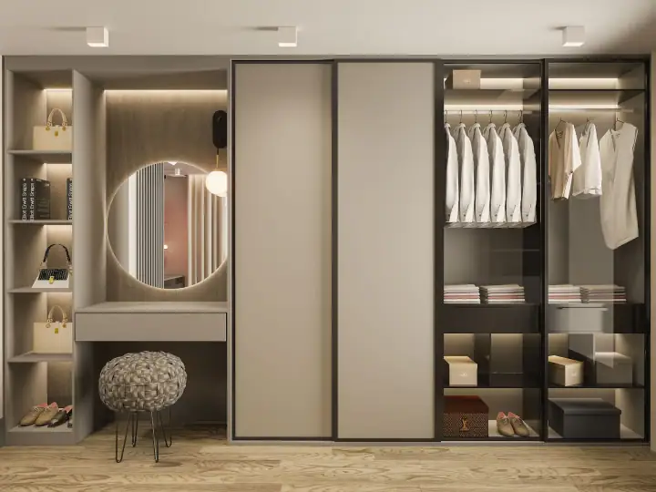
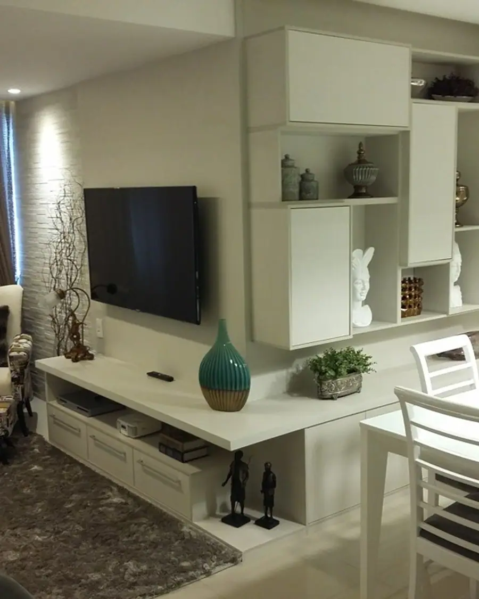
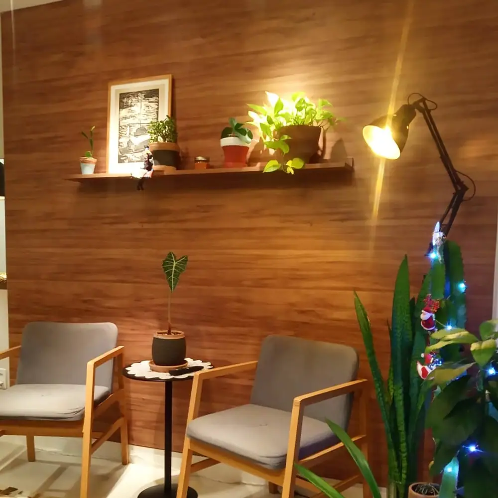
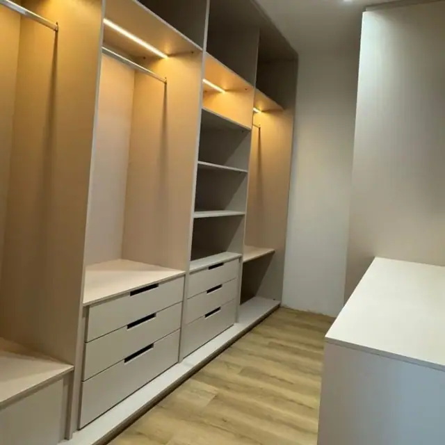
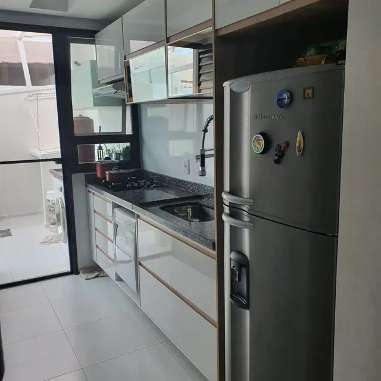
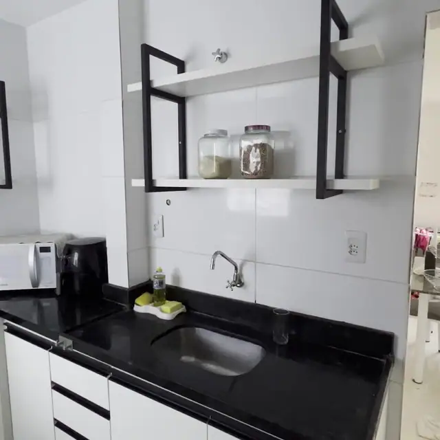

01Cozinhas planejadas
Armários, ilhas e bancadas sob medida, com ferragens de qualidade e acabamento escolhido com você.
Pedir orçamentoMóveis planejados e modulados em Aracaju, com atendimento impecável do Matheus desde o primeiro contato. Atende todos os dias, inclusive domingo.

Oi! Vocês fazem cozinha planejada? Tenho as medidas 📏09:12
Fazemos sim 😊 Pode mandar as medidas ou uma foto do ambiente que eu já te explico o próximo passo.09:13 ✓✓
Vou mandar agora!09:14
Conversa ilustrativa
Ambientes
Escolha o ambiente e fale direto com a Officina Marcenaria. A mensagem já vai pronta no WhatsApp, é só mandar as medidas ou uma foto.

01Armários, ilhas e bancadas sob medida, com ferragens de qualidade e acabamento escolhido com você.
Pedir orçamento 02
02Guarda-roupas, cabeceiras e painéis que organizam o quarto e aproveitam cada parede.
Pedir orçamento
03Closet com nichos, gavetas e iluminação, desenhado para as suas roupas e a sua rotina.
Pedir orçamento 04
04Painéis de TV, racks e estantes que deixam a sala elegante e sem fio aparecendo.
Pedir orçamento 05
05Bancadas, estantes e gaveteiros para trabalhar em casa com conforto e organização.
Pedir orçamento 06
06
A marcenaria
Um cliente precisou levar todos os móveis modulados numa mudança urgente e foi atendido. Outros elogiam prazo, material e preço.
Tire sua dúvida agora
As dúvidas que todo cliente tem, respondidas com as informações da Officina Marcenaria. Se quiser algo mais, é só chamar no WhatsApp.
Onde fica a Officina Marcenaria?agora
A Officina Marcenaria fica na R. José Conrado de Araújo, 75, Atalaia, em Aracaju (SE), CEP 49032-400. Pelo botão "Traçar rota" nesta página você abre o caminho direto no Google Maps.agora ✓✓
Como funciona
Conte qual ambiente quer planejar e mande fotos ou medidas. A equipe marca a medição.
Você recebe o projeto com acabamentos e o orçamento detalhado antes de aprovar.
Os móveis são fabricados sob medida e montados pela equipe, com limpeza no final.
Segunda a domingo: 08h–19h
Projetos entregues




Avaliações no Google
Avaliações reais de clientes publicadas no Google Maps.
“Achei a empresa pelo Google e devido a avaliação 5 estrelas entrei em contato com o Matheus. E desde o 1º contato o atendimento foi impecável. Mandei meu esboço, ele veio confirmar as medidas, me deu dicas excelentes para o móvel da sala.”
“A oficina Marcenaria e Planejados é uma empresa que atende as necessidades dis clientes. Gostaria de deixar aqui meu agradecimento mais sincero ao Matheus, excelente marceneiro!”
“Precisei fazer uma mudança com certa urgência e tinha o desejo de levar todos os meus móveis modulados para o meu novo apartamento. Estava um pouco apreensivo considerando que seriam necessários vários ajustes nos móveis para que tudo fosse encaixado no novo local.”
“Já fiz serviços com diversos profissionais dessa área de marcenaria, montagem de móveis, construções e etc, mas devo admitir que nunca tinha encontrado profissionais tão bons , prestativos, super capacitados e com uma sintonia excelente com o cliente.”
“Quero externar meu agradecimento à Officina Marcenaria e Planejados pelo Comprometimento e responsabilidade no tocante à entrega e aos prazos.”
Dúvidas
Não achou a sua? Pergunte direto no WhatsApp.
A Officina Marcenaria fica na R. José Conrado de Araújo, 75, Atalaia, em Aracaju (SE), CEP 49032-400. Pelo botão "Traçar rota" nesta página você abre o caminho direto no Google Maps.
A Officina Marcenaria atende segunda a domingo, das 08h às 19h. O agendamento é feito pelo WhatsApp.
É só chamar no WhatsApp (79) 99949-3783 pelo botão "Pedir orçamento". Mande pelo WhatsApp o ambiente, as medidas aproximadas ou fotos. A equipe agenda a medição e apresenta o projeto.
Cozinhas planejadas, Dormitórios, Closets, Salas e home theater, Home office e banheiros. O projeto é feito sob medida para o seu espaço depois da medição.
Depende do tamanho do projeto e dos materiais. O prazo é informado junto com o orçamento, antes de você aprovar.
O planejado é desenhado e fabricado nas medidas exatas do seu ambiente. O modulado tem tamanhos prontos, que nem sempre aproveitam todo o espaço.
Dá. Um projeto bem planejado aproveita cantos e altura, e às vezes um closet aberto resolve melhor que um guarda-roupa.
Onde fica
É só chamar
Peça seu orçamento na Officina Marcenaria pelo WhatsApp, sem compromisso.